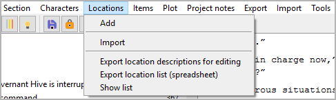

Schauplätze-Menü
Schauplatz operation

Hinzufügen
Hinzufügen a new location
With Schauplätze > Hinzufügen, you can add a location to the tree.
If a location is selected, the new location is placed after the selected one.
Otherwise, the new location is placed at the last position.
The new location has an auto-generated Titel. You can change it in the right pane.
Importieren
Importieren locations from another project
With Schauplätze > Importieren, you can import a selection of locations from another project. First you select an XML file containing the location data. Then you select the locations you want to add to the current project.
Hinweis
To create an XML-Schauplatzdatei for the current project, use Exportieren > Figuren/Schauplätze/Gegenstände-Datendateien.
Schauplatzbeschreibungen zum Bearbeiten exportieren
Exportieren an ODT document that can be imported again after editing
With Gegenstände > Schauplatzbeschreibungen zum Bearbeiten exportieren,
you can create a text document that contains
location descriptions that can be edited with Writer and reimported.
Der Dateinamenszusatz lautet _locations_tmp.
Schauplatzliste exportieren (Tabelle)
Exportieren an ODS document that can be imported again after editing
With Gegenstände > Schauplatzliste exportieren (Tabelle),
you can create a spreadsheet that contains
a location list that can be edited with Calc and reimported.
Der Dateinamenszusatz lautet _loclist_tmp.
Bemerkung
You can reorder, hide or delete columns and rows without affecting the reimport. Only the first column and the first row, which are hidden by default, must not be changed as they contain the structural information for the import.
Liste anzeigen
Show an HTML report with locations data
With Schauplätze > Liste anzeigen, you can create a list-formatted HTML file that contains a location list, and launch your system’s web browser for displaying it.
Bemerkung
The report is a temporary file, auto-gelöscht on program exit. If needed, you can have your web browser save or print it.